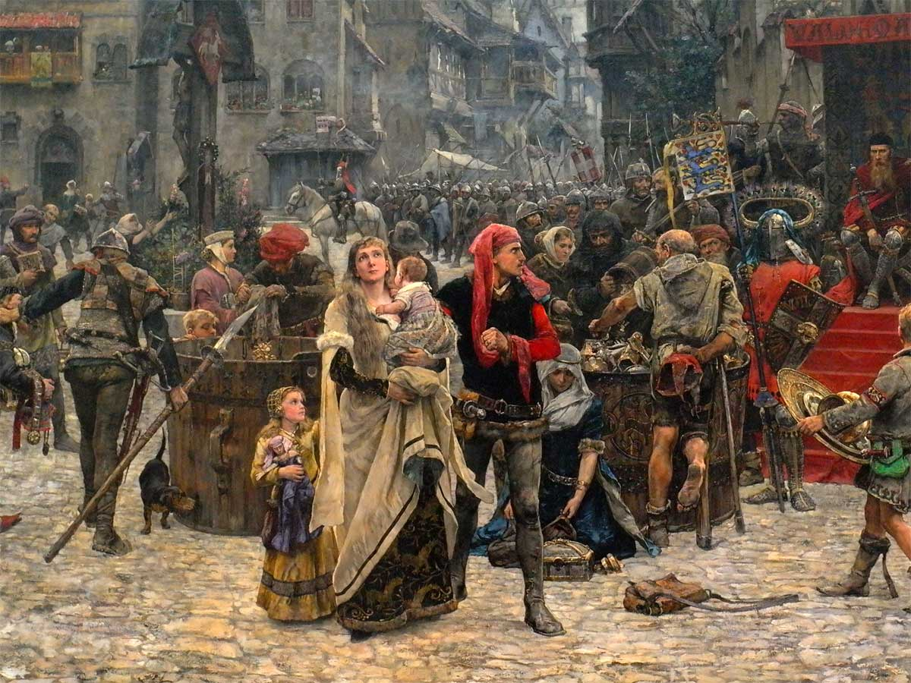

Середньовіччя — це період в історії Європи, що триває приблизно з V до XV століття, між падінням Західної Римської імперії та початком епохи Відродження. Цей період характеризується змінами в соціальній, політичній та культурній сферах, зокрема феодальною системою, де земля була основним джерелом багатства та влади. Середньовіччя поділяється на раннє, зріле та пізнє, кожен з яких має свої особливості. У ранньому середньовіччі спостерігається занепад міст і торгівлі, а також відновлення аграрного суспільства. В цей час розвиваються різні варварські королівства, а також відбувається поширення християнства. У зрілому середньовіччі відбувається зростання міст, формування університетів і розвиток наукових знань. Пізнє середньовіччя характеризується економічним зростанням, виникненням нових соціальних класів, таких як буржуазія, і змінами в політичному устрої. З'являються нові ідеї в мистецтві, філософії та науці, що готують ґрунт для епохи Відродження.
Основні події середньовічного світу
Багато нового
Ключові моменти Середньовіччя:
- Розквіт феодалізму.
- Хрестові походи.
- Зародження університетів і розвиток наук.
- Зростання міст та розвитку торгівлі.
- Поширення християнства та створення монастирів.
- Розвиток архітектури, зокрема готичного стилю.
- Виникнення лицарства та кодексу честі.
- Участь в Інквізиції та релігійних конфліктах.
- Зародження наукових підходів, що вели до Ренесансу.

Цікаві факти:
- Чорна смерть — наймасштабніша епідемія в Європі.
- Замки були основними фортифікаційними спорудами.
- Лицарі дотримувалися кодексу честі та займалися турнірами.
- Середньовічна Європа була поділена на численні феодальні держави.
- Виникнення готичного стилю в архітектурі, зокрема у соборах.
- Селяни часто були прикріплені до землі та залежали від лордів.
- Монастирі зберігали і копіювали книги, сприяючи розвитку освіти.
- Поширення рицарських романів та літератури, що формувала ідеали лицарства.
- Виникнення університетів, що стали центрами знань та культури.